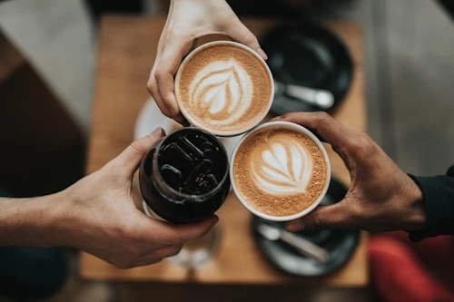
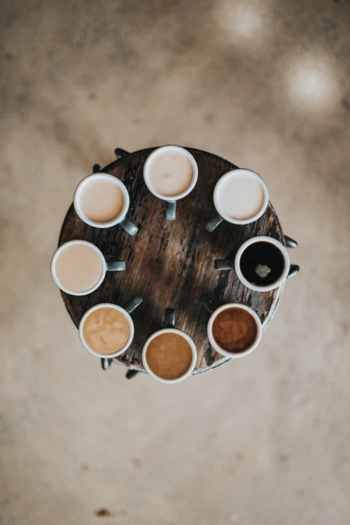
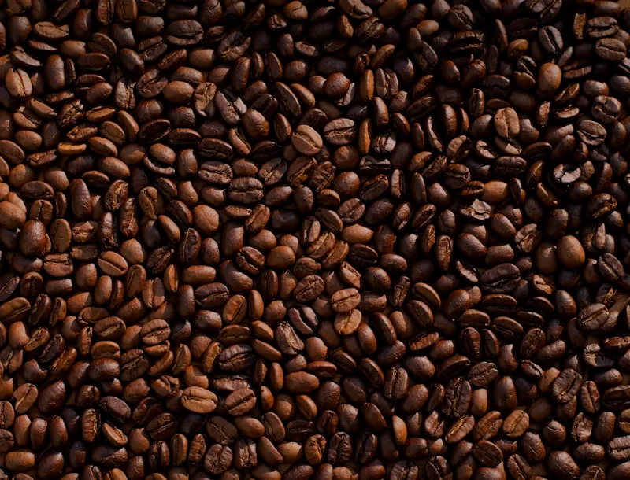
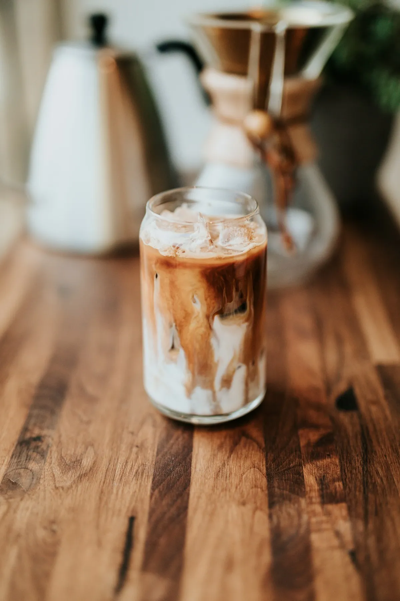

Origin
Why origin changes your morning cup.
Terroir, processing, and the small decisions that turn a bean into a flavour.
Brewing guides, origin stories, barista opinions, and occasional detours into why the croissant recipe took fourteen tries.


 Featured
Featured
You do not need a certified palate to enjoy a good cup. You need curiosity, a spoon, and the willingness to say "this tastes like something" — even if that something is "warm."
Read the GuideNew writing every Tuesday. No filler, no listicles — just things we actually wanted to say.
Terroir, processing, and the small decisions that turn a bean into a flavour.


Grind, ratio, time — and what you can safely ignore.

The full, slightly obsessive story of our house croissant — and every version we threw away.


From the first grind to the last wipe-down — what a shift actually looks like.


Why your milk choice changes the whole drink — and how to pick right.

What it actually means, when it matters, and when it does not.

They are not the same thing. Here is exactly why.

Everything we wish someone had told us when we started. No gatekeeping, no jargon — just the small things that make a big difference.
Every recipe on bar, written for home brewers. Grams, seconds, and temperatures — no guesswork.
We are not sponsored by anyone. These are the tools we would buy again tomorrow.
All available as retail bags at the cafe. Roasted to order, rested seven days.
Coffee is 98% water. If you would not drink it, do not brew with it.


The journal is best enjoyed with a cup. Come sit with us, or keep reading from wherever you are.